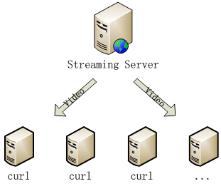
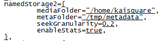
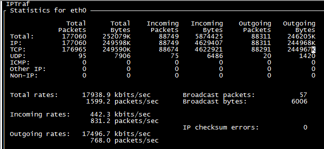

Streaming Server Performance Test Manual
Version History
| Date | Modification | Author | Auditor |
| 2014/12/26 | create | Li Zhinian | Li Zhinian |
V4及以前的Core Engine中单独出来的Streaming Server只有crtmp server，所以我们要测试的就是crtmp server的性能。
我们的目标是测试出crtmp server最多能支持多少客户端从它上面拉取视频流进行查看。由于没办法模拟大量真实的客户查看视频流，所以使用curl（开源文件传输工具，可以用来从crtmp server获取视频流）从crtmp同时拉取多路视频流进行测试。测试原理图如下：

本文档中准备了两台服务器，1台运行Streaming Server，另一台运行多个curl程序，从Streaming Server获取视频流。
本文中服务器分配如下：
10.101.0.10作为Streaming Server
10.101.10.210作为curl客户端
在Streaming Server服务器上做如下操作：
crtmp server的安装是包含在Core Engine的部署包里面的，所以请参考《ALIFF-KAIUP-CORE-Ubuntu-deployment-guide.docx》的描述在10.101.0.10上部署Core Engine（只需要部署就行，不用配置和运行）

在运行curl客户端的服务器上执行如下操作（依赖包从Streaming-Server-Performance-Test-Dependencies.tar.gz中获取）：
拷贝rtmpdump.tar.gz到任意目录下，依次执行以下步骤：
tar -zxvf rtmpdump.tar.gz
cd rtmpdump/
make
sudo make install
sudo ldconfig
拷贝curl-7.27.0.tar.gz到任意目录，依次执行以下步骤：
tar -zxvf curl-7.27.0.tar.gz
cd curl-7.27.0/
./configure
make
sudo make install
sudo ldconfig
拷贝start-pull-stream.sh到任意目录下，将脚本里面的crtmpHost的值改成Streaming Server所在服务器的host
在Streaming Server服务器上，到目录kupcore/scripts/linux/下，执行sh run-all-crtmpserver.sh
运行start-pull-stream.sh从Streaming Server同时获取多路视频流，运行方法如下：
sh start-pull-stream.sh number
其中的number表示从Streaming Server同时拉取视频流的数量，我们就是要测试这个number的数值。即这个数值最大为多少时，Streaming Server的出口带宽占满，或者CPU性能到达极限，或者Streaming Server因为连接太多而不再响应。
所以我们主要观察以下几个点：
用htop查看服务器的CPU占用率
在Streaming Server上执行sudo iptraf 查看出口流量，具体方法如下：
执行sudo iptraf --> 回车 --> 选择Detailed interface statistics --> 选择eth0 --> 回车，如此就可以看到该服务器的出口流量情况，如下图：

其中outgoing rates就是出口流量情况，观察一段时间，得到稳定状态下的该值大小。
经过观察，如果同时有10个client同时在向Streaming Server请求视频流，出口流量大概在8000到9300 kbits/sec之间。随着client数量增加，该值会线性增长，即设备数为100时，大概在80000到93000kbits/sec之间。除非流量达到该服务器的网卡瓶颈（即如果该服务器网卡是百兆网卡，该出口流量最大就是100000kbits/sec）。
在Streaming Server或者client服务器上执行如下命令：
sudo lsof -i:1935 | grep ESTABLISHED | wc -l
如果得到的值和我们想同时拉取的视频流的数目number一样，说明所有连接正常建立
查看方法与4.2节中的类似
如果以上四个观察点都正常的话，说明同时拉取的客户端的数量还没有达到最大值。这时先执行sh stop-pull-stream.sh 关闭所有client连接，之后增加client数量再进行测试，比如sh start-pull-stream.sh number